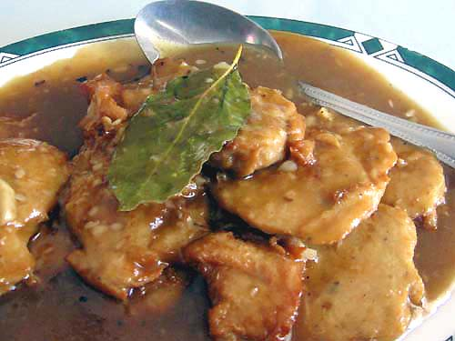

Vegan Adobo

Ingredients
- 3-5 tbsp of olive oil
- 1 medium onion
- 4 cloves garlic
- 1/4 of flour
- 3 bay leaves
- 1/2 cup soy sauce or liquid aminos
- 1/2 apple cider vinegar
- 16-20 oz. super firm tofu
- 2-4 cups of cooked white or brown rice
Directions
- Dice the onion and mince the garlic.
- Heat the oil in a large pan on low heat. Put the onion and garlic in when oil is warm. Stir occasionally until onions have browned.
- Press tofu and cut into small cubes. Toss the cubes with flour until each is coated.
- Fry the tofu with the onions and garlic until the cedges of each cube are crispy and brown.
- Pour in the soy sauce and apple cider vinegar. Add the bay leaves, making sure they are submerged in the sauce. Let simmer for 20-45 minutes.
- Serve over rice and enjoy!
Other Recipes to Try: